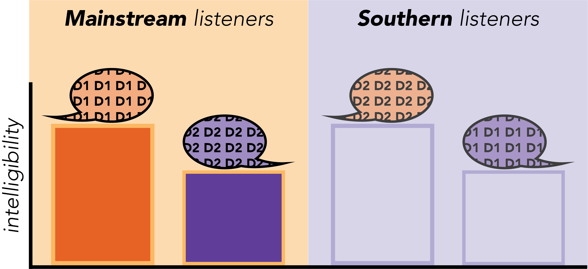
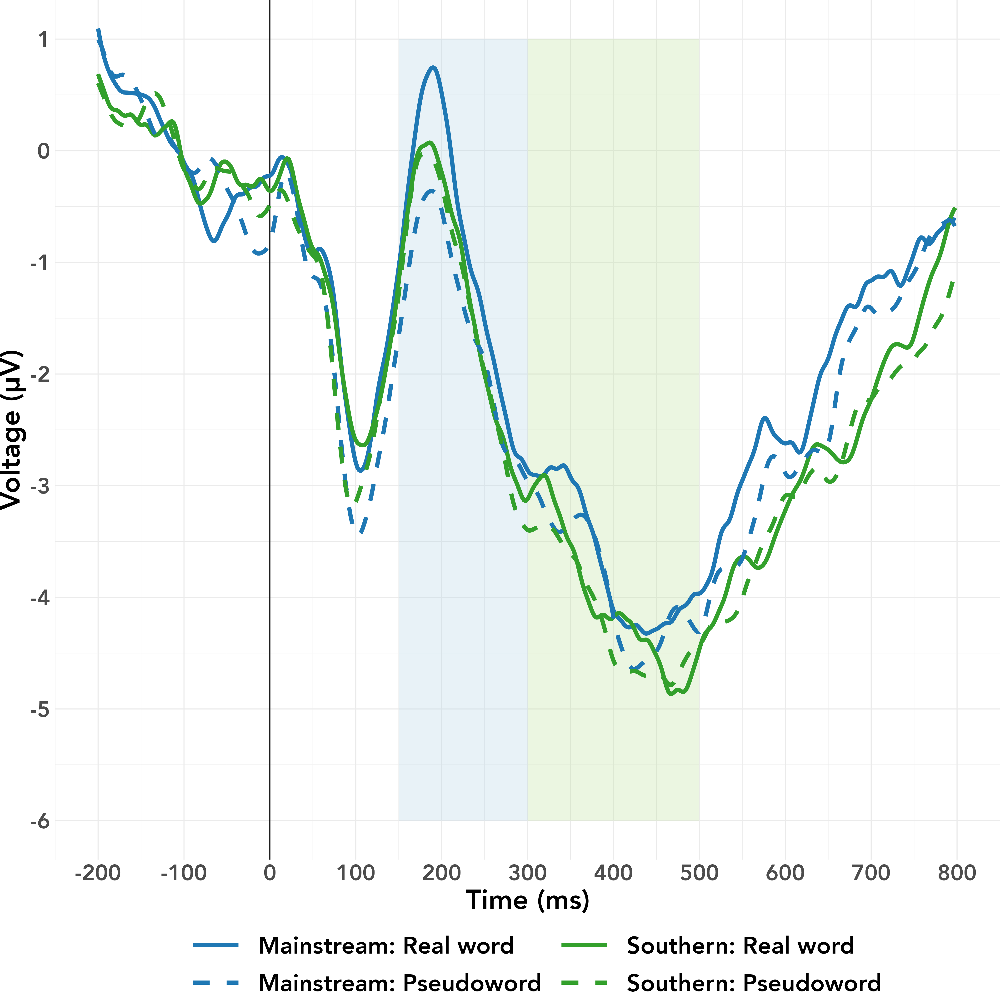
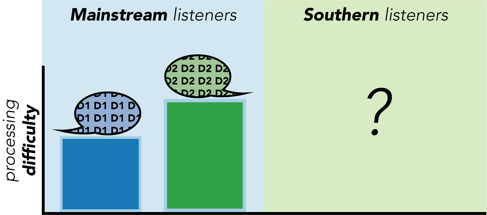
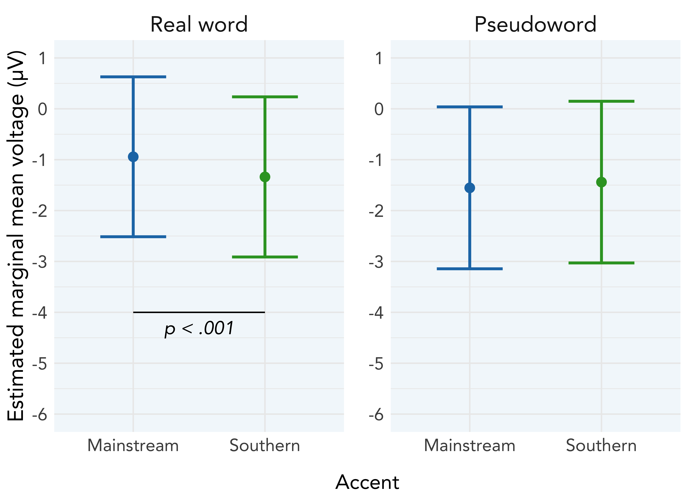
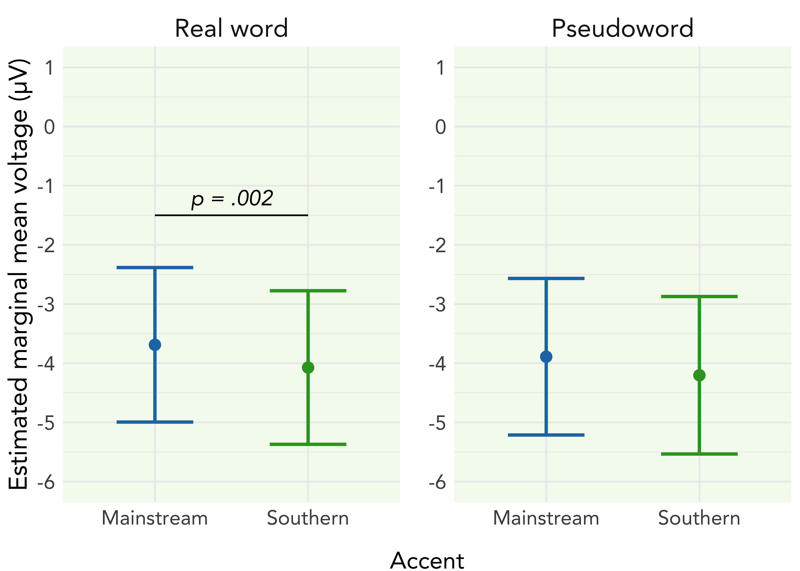

Tracking the time-course of cross-dialect comprehension with ERPs:
Comparing Southern and Mainstream US-accented speech perception
Holly A. Zaharchuk1, Abby Walker2, Janet G. van Hell1
1 Department of Psychology & Center for Language Science, The Pennsylvania State University
2 Department of English, Virginia Polytechnic Institute and State University
Key terms
- Southern US English (SUSE) is a regional variety with unique phonetic, lexical, and syntactic features
- Mainstream US English (MUSE) is a supra-regional variety that is perceived as “standard” relative to other varieties
- Southern listeners are bi-dialectal speakers of SUSE (D1) and MUSE (D2)
- Mainstream listeners are mono-dialectal speakers of MUSE (D1)
Previously observed MUSE advantage in behavior

Auditory go/no-go task with EEG
| Talker | Accent | Real words | Pseudowords | Animal names | Total words |
|---|---|---|---|---|---|
| 1 | Mainstream | 120 | 120 | 30 | 270 |
| 2 | |||||
| 3 | |||||
| 4 | Southern | 120 | 120 | 30 | 270 |
| 5 | |||||
| 6 | |||||
| 240 | 240 | 60 | 540 |
ERP predictions and current observations
| Time window | Level of processing | Predicted effect | Prediction | Observed effect | Observation: Word type | Observation: Accent |
|---|---|---|---|---|---|---|
| 150 - 300 ms | Acoustic-phonetic | Main effect of accent | Easier access for D1 | Accent-word type interaction | D1 benefit for real words | Lexicality effect for D1 |
| 300 - 500 ms | Lexico-semantic | Accent-word type interaction | Stronger lexicality effect within D1 |
MUSE advantage for Mainstream listeners
in online measures of lexical processing

Summary of findings and future directions

References
Clopper, Tamati, and Pierrehumbert (2016)
Martin, Molnar, and Carreiras (2016)
Sumner, Kim, King, and McGowan (2014)
Walker (2018)
Zaharchuk, Shevlin, and Van Hell (2021)
P200 analysis

N400 analysis
